Permisos, licencias y bienestar laboral para docentes estatales en Colombia
Manual práctico del CEID Cartago: qué permisos y licencias tienen los docentes estatales, cómo se piden y qué norma los respalda.
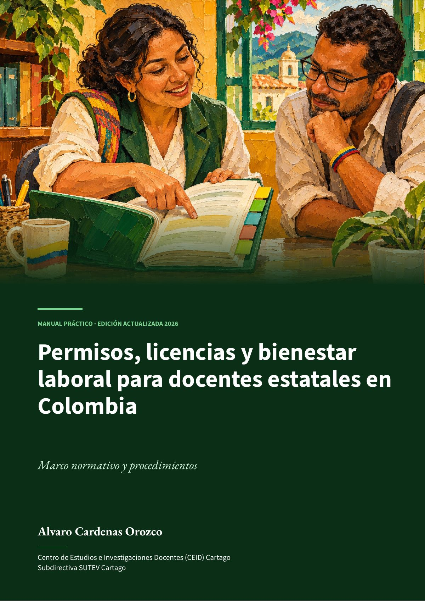
Leer la guía completa
PDF · 58 págs. · 1,2 MB- 12Permiso remunerado por causa justificada
- 14Licencia no remunerada
- 16Licencia por luto
- 17Licencia de maternidad
- 19Licencia de paternidad
- 24Incapacidad por enfermedad o accidente
- 29Comisión de estudios
- 32Permisos sindicales
- 42Si le niegan un derecho
- 44Modelos de solicitud
La edición actualizada de 2026 reorganiza la guía de 2025 como un manual práctico. Cada norma se verificó en su fuente oficial hasta el 4 de noviembre de 2026.
Cada permiso y cada apartado tiene su propia página, con el texto, las hojas del libro y su PDF para descargar. Los más consultados están arriba, en «Ir directo a lo más consultado».
Lo que reúne
- 17 fichas, una por cada permiso o licencia: qué es, cuánto dura, quién lo concede, cómo se pide y qué norma lo respalda. Van del permiso remunerado y la licencia no remunerada a la maternidad, la paternidad, la lactancia, las incapacidades, las comisiones y los permisos sindicales.
- Bienestar laboral y salud en el trabajo: el FOMAG, la seguridad y salud en el trabajo, el acoso laboral y sexual, y la desconexión laboral.
- Qué hacer si niegan un derecho: el derecho de petición y los recursos.
- Seis modelos de solicitud, dónde radicar en Cartago y en el Valle, y todas las normas con su enlace oficial.
Cómo citar
Cardenas Orozco, A. (2026). Permisos, licencias y bienestar laboral para docentes estatales en Colombia: Marco normativo y procedimientos (ed. actualizada). CEID Cartago, Subdirectiva SUTEV Cartago. https://doi.org/10.5281/zenodo.24035887
En esta guía
23 apartados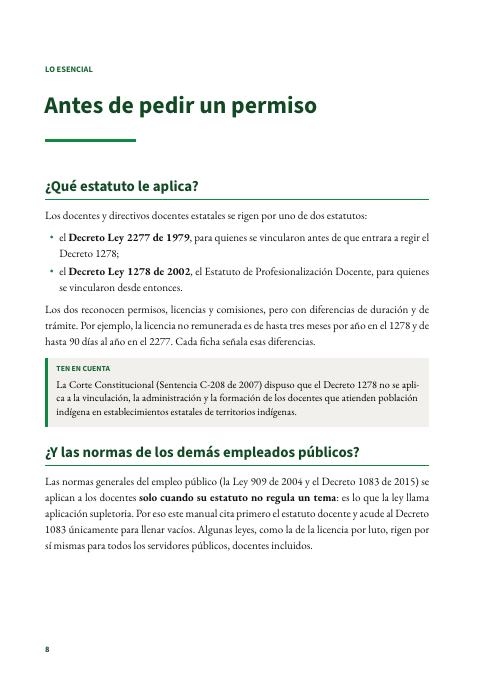
Pág. 8 · 3 págs.Antes de pedir un permisoAlvaro Cardenas OrozcoQué estatuto le aplica, cuándo rigen las normas generales, quién decide y cómo son el calendario, la jornada y las vacaciones.Leer →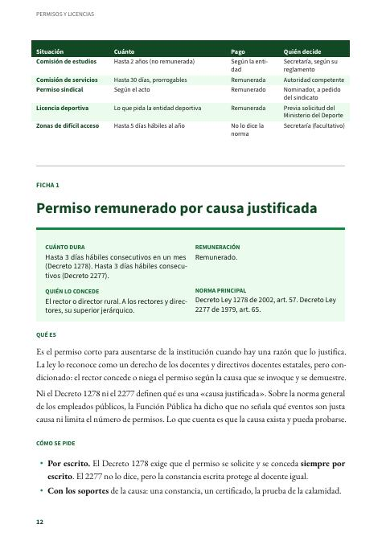
Pág. 12 · 2 págs.Permiso remunerado por causa justificadaAlvaro Cardenas OrozcoHasta tres días hábiles consecutivos, pagos, que concede el rector por escrito cuando hay una causa que lo justifica.Leer →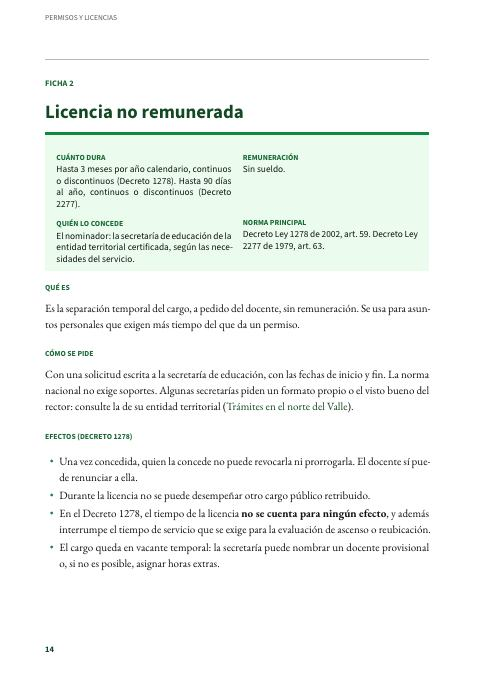
Pág. 14 · 2 págs.Licencia no remuneradaAlvaro Cardenas OrozcoHasta tres meses al año en el Decreto 1278 y hasta 90 días en el 2277, sin sueldo, que concede la secretaría de educación.Leer →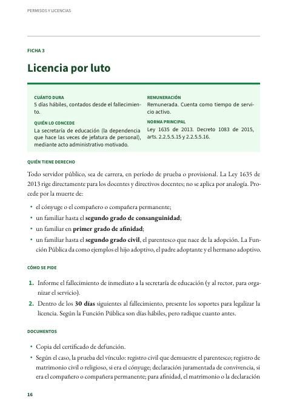
Pág. 16 · 2 págs.Licencia por lutoAlvaro Cardenas OrozcoCinco días hábiles remunerados por la muerte del cónyuge o de un familiar cercano, con 30 días para presentar los soportes.Leer →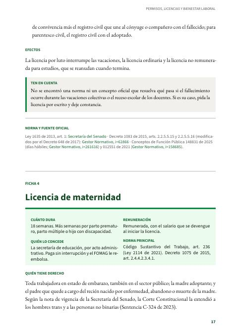
Pág. 17 · 2 págs.Licencia de maternidadAlvaro Cardenas OrozcoDieciocho semanas remuneradas, con ampliaciones por parto prematuro, múltiple o hijo con discapacidad. Sin EPS: la paga la secretaría y la reembolsa el FOMAG.Leer →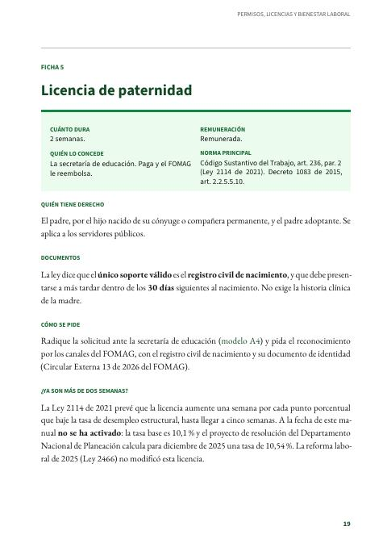
Pág. 19 · 2 págs.Licencia de paternidadAlvaro Cardenas OrozcoDos semanas remuneradas. El único soporte que exige la ley es el registro civil de nacimiento, dentro de los 30 días.Leer →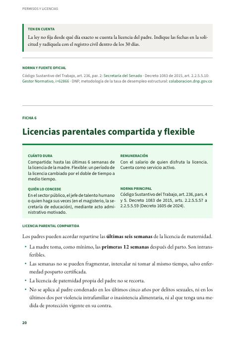
Pág. 20 · 2 págs.Licencias parentales compartida y flexibleAlvaro Cardenas OrozcoLos padres pueden repartirse las últimas seis semanas de la licencia de maternidad o cambiar un período por medio tiempo.Leer →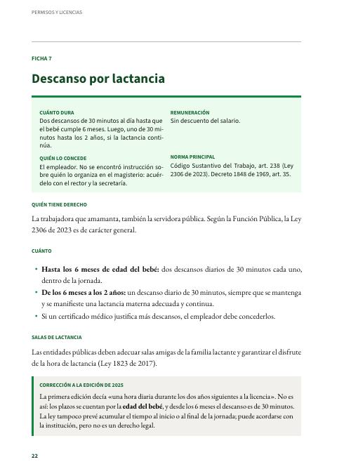
Pág. 22 · 2 págs.Descanso por lactanciaAlvaro Cardenas OrozcoDos descansos de 30 minutos al día hasta que el bebé cumple 6 meses y uno de 30 minutos hasta los 2 años.Leer →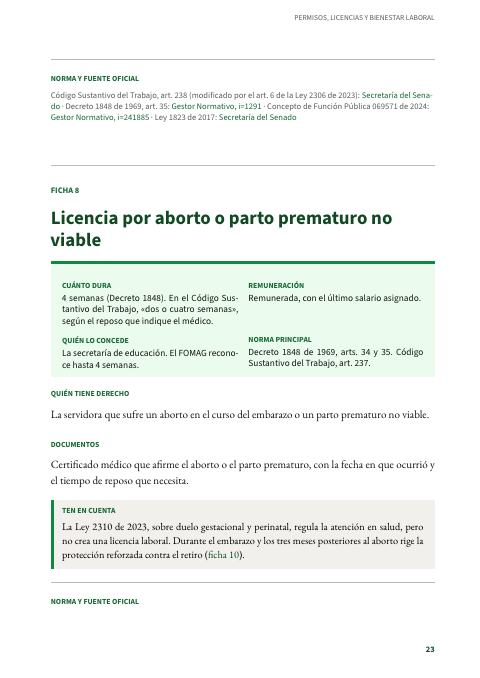
Pág. 23 · 2 págs.Licencia por aborto o parto prematuro no viableAlvaro Cardenas OrozcoCuatro semanas remuneradas con el último salario, con el certificado médico que afirme el hecho y el reposo necesario.Leer →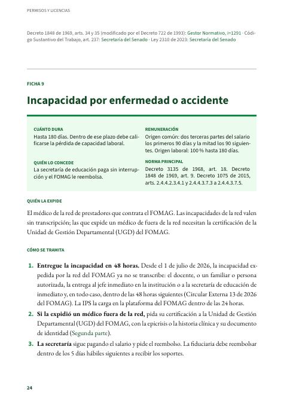
Pág. 24 · 2 págs.Incapacidad por enfermedad o accidenteAlvaro Cardenas OrozcoHasta 180 días. La incapacidad de la red del FOMAG se entrega en 48 horas, sin transcripción; la de origen común se paga en dos tercios y luego en la mitad.Leer →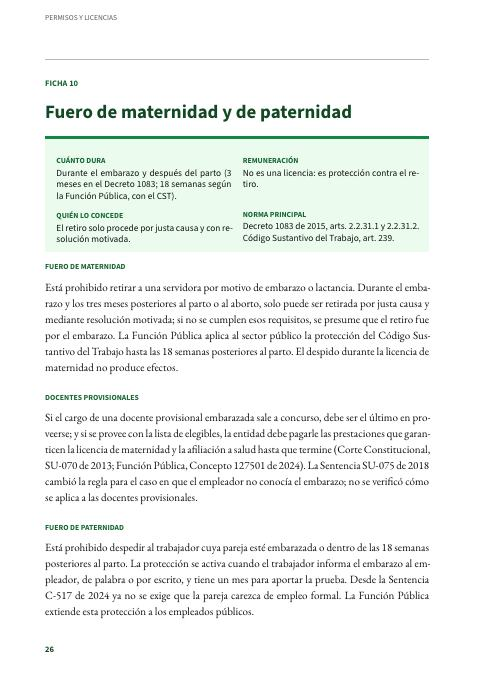
Pág. 26 · 2 págs.Fuero de maternidad y de paternidadAlvaro Cardenas OrozcoProtección contra el retiro durante el embarazo y después del parto, también para las docentes provisionales.Leer →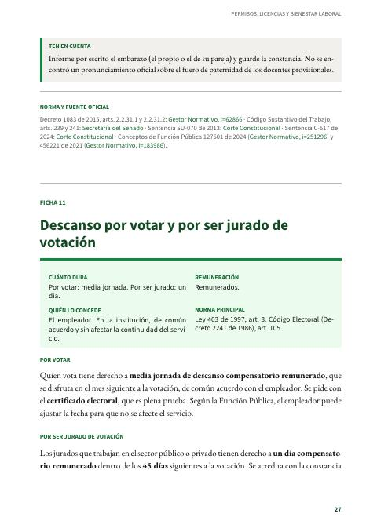
Pág. 27 · 2 págs.Descanso por votar y por ser jurado de votaciónAlvaro Cardenas OrozcoMedia jornada remunerada por votar y un día compensatorio por ser jurado de votación.Leer →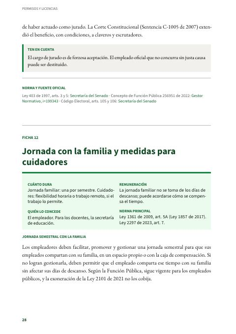
Pág. 28 · 2 págs.Jornada con la familia y medidas para cuidadoresAlvaro Cardenas OrozcoUna jornada semestral con la familia y horarios flexibles para quienes cuidan a un familiar con discapacidad.Leer →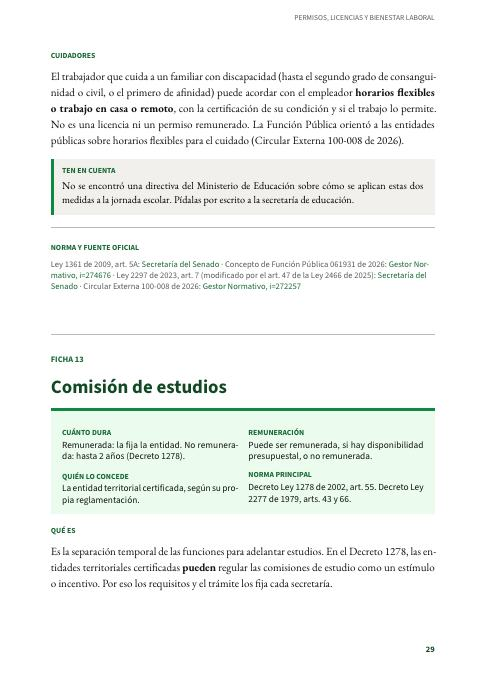
Pág. 29 · 2 págs.Comisión de estudiosAlvaro Cardenas OrozcoSeparación temporal para estudiar, remunerada o no, que regula cada secretaría de educación.Leer →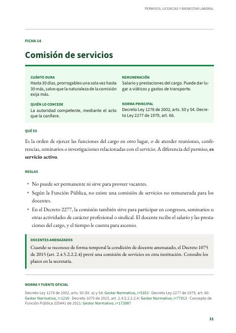
Pág. 31 · 1 pág.Comisión de serviciosAlvaro Cardenas OrozcoEjercer las funciones en otro lugar o asistir a eventos del servicio, hasta 30 días prorrogables, con salario y viáticos.Leer →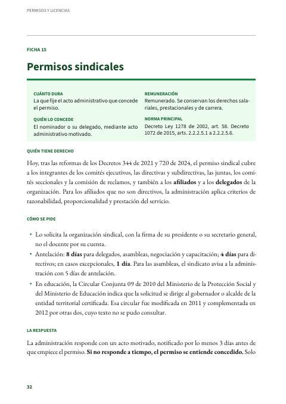
Pág. 32 · 2 págs.Permisos sindicalesAlvaro Cardenas OrozcoRemunerados, para directivos, afiliados y delegados. Los pide el sindicato, y si la administración no responde a tiempo, se entienden concedidos.Leer →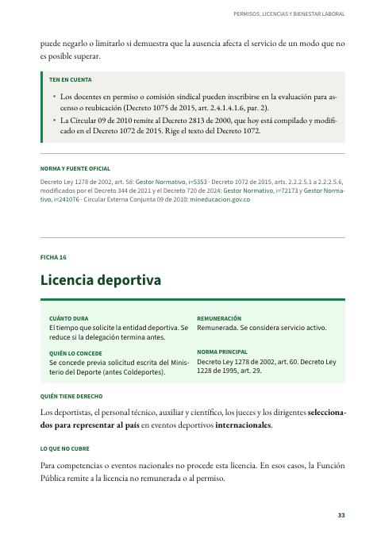
Pág. 33 · 2 págs.Licencia deportivaAlvaro Cardenas OrozcoRemunerada, para quienes son seleccionados para representar al país en eventos deportivos internacionales.Leer →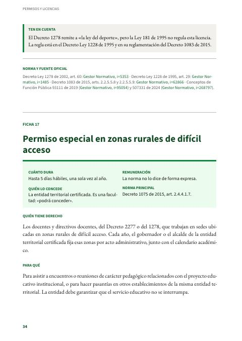
Pág. 34 · 2 págs.Permiso especial en zonas rurales de difícil accesoAlvaro Cardenas OrozcoHasta cinco días hábiles al año para encuentros pedagógicos o pasantías, más otros estímulos para estas zonas.Leer →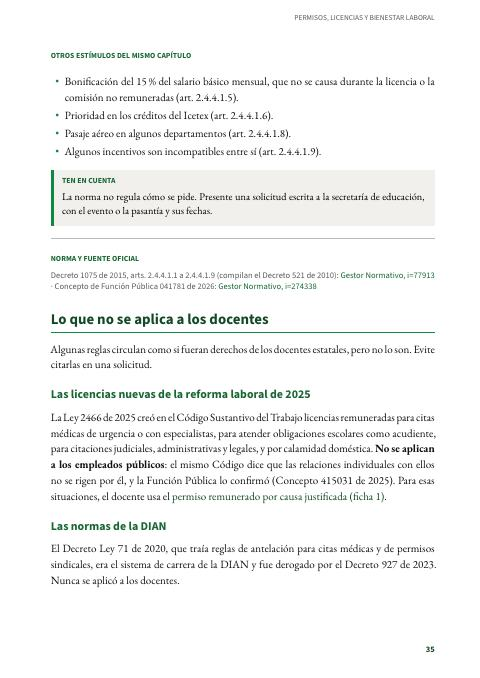
Pág. 35 · 2 págs.Lo que no se aplica a los docentesAlvaro Cardenas OrozcoLas licencias de la reforma laboral de 2025, las reglas de la DIAN y otros plazos que circulan pero no son derechos docentes.Leer →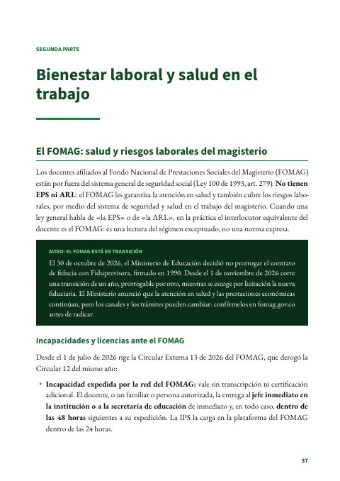
Pág. 37 · 5 págs.Bienestar laboral y salud en el trabajoAlvaro Cardenas OrozcoEl FOMAG, la seguridad y salud en el trabajo, el bienestar, el acoso laboral y sexual, la desconexión laboral y la salud mental.Leer →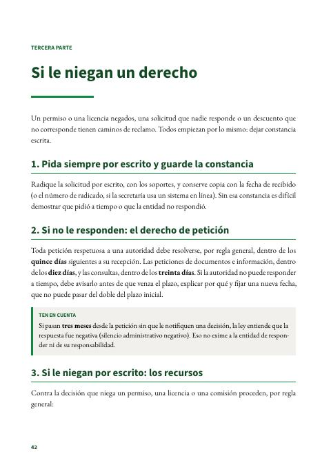
Pág. 42 · 2 págs.Si le niegan un derechoAlvaro Cardenas OrozcoCómo reclamar cuando no responden o niegan: el derecho de petición, los recursos de reposición y apelación, y la tutela.Leer →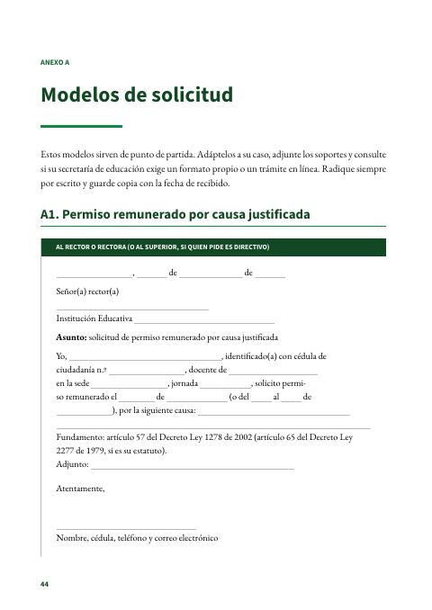
Pág. 44 · 5 págs.Modelos de solicitudAlvaro Cardenas OrozcoSeis modelos listos para diligenciar: permiso, licencia no remunerada, luto, paternidad, derecho de petición y recurso.Leer →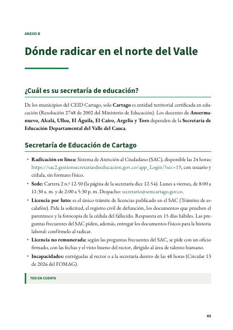
Pág. 49 · 2 págs.Dónde radicar en el norte del ValleAlvaro Cardenas OrozcoLa Secretaría de Educación de Cartago, la del Valle para los demás municipios del nodo y los canales del FOMAG.Leer →